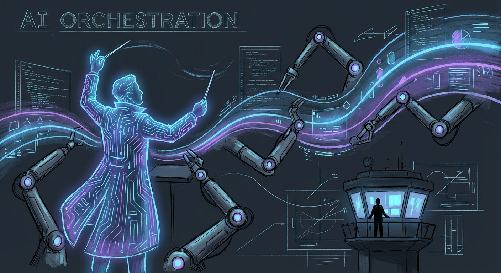
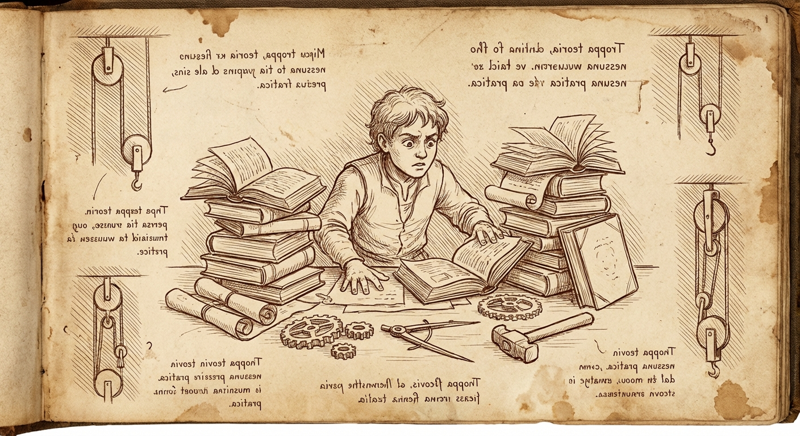
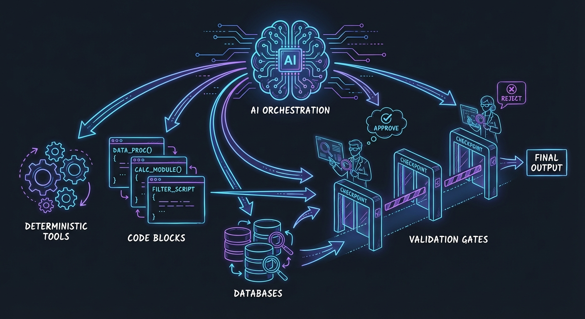
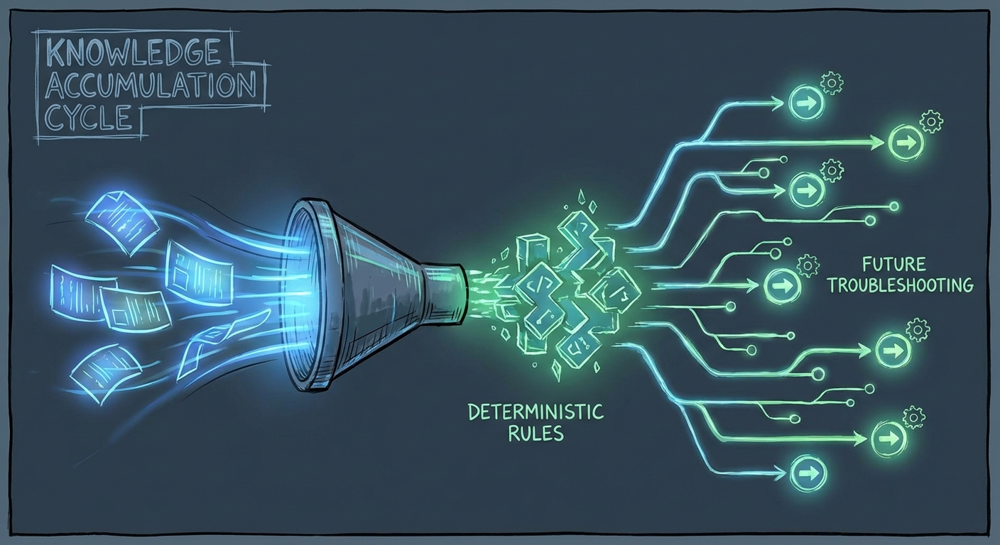

The Orchestrator Pattern: Using AI Wisely in Technical Workflows
A practical framework for integrating generative AI into enterprise support and troubleshooting

Red Hat has embraced AI and generative tools, and I'm personally enthusiastic about their potential. But enthusiasm without discipline is just noise. After months of building and refining AI-assisted workflows for technical support cases, I've arrived at a principle that I think deserves wider discussion: generative AI should orchestrate and interpret, not execute.
The magic isn't in having an LLM do everything. It's in knowing what an LLM shouldn't do.
The Smart Intern Problem

Here's a mental model that's served me well: think of AI agents as brilliant interns who've read every textbook but have never touched a production system.
They have encyclopedic knowledge. They can synthesize information across domains. They're eager to help and will work tirelessly. But they have zero practical experience, no institutional context, and no intuition for the difference between what should work and what actually works in your environment.
You wouldn't hand an intern the keys to production and walk away. You'd give them structured tasks, review their work at checkpoints, and use your domain expertise to catch the things they couldn't possibly know. The same discipline applies to AI agents.
There's also a fundamental technical limitation: generative AI is probabilistic. Every response is a sample from a distribution of possible outputs. For creative tasks, that's a feature. For technical diagnostics, it's a liability. When I'm troubleshooting why a customer's OpenShift cluster is dropping etcd connections, I don't want a probabilistically-likely answer. I want the actual evidence from their actual system.
The Orchestrator Pattern

The principle I've settled on is simple: AI agents excel as orchestrators and tool writers, but the tools themselves—and the judgment calls about their output—must remain deterministic and human-validated.
The key insight is that LLMs are remarkably good at generating tooling. They can write the grep command, the insights rule, the API connector. They can synthesize case context and propose hypotheses. What they can't do is know whether the output makes sense for your specific situation. That's where domain expertise—your expertise—remains irreplaceable.
In my support workflow, the control is in the prompt design and the ongoing steering:
- I specify which tools to use and how – each prompt tells the agent exactly which utilities (the remote diagnostic environment,
rhcase,insights run) to invoke and what patterns to follow - The agent writes the specific commands within my specified constraints and executes them
- Deterministic tools return consistent results – the same sosreport through
insights runreturns the same findings every time - I review output and course-correct – when the problem statement misses context or a hypothesis is off-base, I inject that knowledge and have the agent revise
- I iterate on deliverables until they're defensible by me, the support engineers, and most importantly, the customer
The human expertise isn't just in designing the initial workflow – it's in steering the process based on output. I've built up a library of prompts that encode my diagnostic methodology, but I'm actively involved at each stage, adding context the agent couldn't know and pushing back when something doesn't make sense.
My Actual Workflow: A Concrete Example
Here's how this plays out in practice. I've developed a multi-step prompt sequence for support case analysis, where each prompt specifies exactly which tools to use and how – but it's not a rigid pipeline. I'm actively steering throughout.
Step 1: Initial Case Analysis
I tell the agent: "Review the case files and generate an incident timeline, problem statement, and hypotheses." This is pure synthesis – the agent reads unstructured case data and produces structured analysis artifacts.
Where steering happens: The agent might produce a problem statement that's technically accurate but misses context I have from previous interactions with this customer. I add that context: "The customer mentioned in a call last week that they recently migrated from version X – factor that in." The agent revises.
Step 2: Insights Analysis
My prompt specifies: "Use the support shell environment to list attachments, identify sosreports or must-gathers, then run insights run with the appropriate rule pack." The agent writes the specific commands, but I've constrained which tools and what patterns to use.
The insights-core rules themselves are fully deterministic – codified pattern-matching that returns the same findings for the same input, every time. The agent just invokes them correctly.
Step 3: Research Phase
I have separate prompts that direct the agent to use rhcase kcs search for Knowledge Base articles and rhcase jira search for related issues. These tools handle the API authentication and data retrieval; the agent constructs appropriate search terms and fetches relevant results.
This is where the time savings become dramatic. Manually searching KCS, reading through potentially relevant articles, cross-referencing JIRA issues, and digging through upstream source code on GitHub can easily consume hours. The agent does this in minutes, returning full links to relevant articles and specific code snippets I can verify. It's not doing anything I couldn't do – it's doing the tedious retrieval work at machine speed while I focus on interpretation.
Where steering happens: Sometimes the agent's search terms miss the mark. I'll redirect: "Search for the specific error code from line 47 of the stack trace, not the generic exception type."
Step 4: Hypothesis Validation
My prompt says: "For each hypothesis, construct a validation command using the support shell environment targeting files in /cases/<casenumber>/." The agent generates specific grep commands, omc queries, or log analysis – but within the execution environment I've specified.
Where steering happens: If a hypothesis gets invalidated, I might add context that suggests a different direction: "Given that we've ruled out network issues, let's look at whether the certificate rotation timing aligns with the reported failures."
Step 5: Deliverable Generation
Finally, I have a detailed prompt specifying exactly what documents to generate, what formatting rules to follow, what disclaimers to include, and what style guide to reference.
Where steering happens: This is where I spend the most time iterating. The first draft is rarely the final draft. I push back: "This recommendation isn't defensible – we don't have evidence that X caused Y, only correlation. Soften the language." Or: "The customer won't be able to validate this claim without access to the JIRA – either link it or remove the assertion." We go back and forth until every claim in the deliverable can be validated by the customer, the support engineers, and me.
The key insight: this isn't a fire-and-forget pipeline. The prompts encode my methodology, but I'm actively involved throughout – injecting context the agent couldn't know, redirecting when analysis goes off-track, and iterating on deliverables until they meet the standard of "defensible by everyone who reads them."
What I'm not doing is the hours of tedious research that used to dominate my case work. The agent handles the retrieval – searching documentation, pulling JIRA context, finding relevant source code – and presents me with linked, verifiable references. My time goes toward the judgment calls that actually require domain expertise.
Why This Matters: Consistency and Contribution

There's a compounding benefit to this approach that goes beyond individual case efficiency.
When diagnostic logic lives in deterministic rules rather than LLM prompts, that logic becomes shareable. It can be version-controlled, peer-reviewed, and improved incrementally. I'm currently working on a system where resolved support cases can be distilled into new Insights rules that the entire organization can use—a semi-automated knowledge capture pipeline.
This only works if the detection logic is deterministic. You can't meaningfully share a prompt that says "look for etcd problems" with the same confidence you can share a rule that says "if /var/log/pods/*/etcd*/etcd/*.log contains entries with took too long exceeding threshold T, flag it."
The LLM's role in this contribution workflow is to help distill the case resolution into the structured format the rule system requires—extracting the component taxonomy path, classifying the symptom, and documenting the detection pattern. It's still generative work, but it's generating structure, not executing logic.
Practical Takeaways
If you're building AI-assisted workflows for technical work, here's what I'd suggest:
Your expertise lives in workflow design AND active steering. The prompts you write encode your methodology, but you're not done once you hit enter. Expect to inject context, redirect when analysis goes off-track, and iterate on outputs. The agent is doing the heavy lifting of synthesis and tool invocation; you're providing the judgment and domain knowledge that keeps it on course.
Specify the tools, let the agent write the invocations. Don't say "figure out how to check the logs." Say "use grep against /var/log/messages looking for patterns X, Y, Z." The agent is good at constructing the specific command; you're good at knowing which tool is appropriate for the situation.
Build deterministic tools the agent can invoke. If you find yourself repeatedly having the agent do the same kind of lookup or analysis, encode that in a tool. I built rhcase specifically so the agent could search KCS and JIRA without me having to handle authentication or API details in every prompt. The tool is deterministic; the agent just calls it.
Iterate on deliverables until they're defensible. The first draft is rarely the final draft. Push back when claims aren't supported by evidence. Demand that every assertion be validatable by the reader. If you can't defend it to the customer or the support engineer, it shouldn't ship.
Build for contribution. When you solve a problem, ask: can this solution be encoded in a way that helps the next person automatically? Deterministic rules (like insights-core) compound over time. Prompt patterns can be shared. The goal is to turn individual expertise into organizational capability.
The Bigger Picture
This isn't about being skeptical of AI. I use LLMs daily, and they've genuinely transformed how I approach complex support scenarios. But I've also learned that the most powerful AI-assisted workflows aren't the ones where AI does the most work—they're the ones where AI does the right work, with the right oversight.
The goal isn't to replace technical expertise with AI. It's to amplify your expertise by offloading the cognitive load of synthesis, tool generation, and documentation while you focus on the judgment calls that actually matter.
AI is your brilliant intern. Treat it like one: give it structure, review its work, and never forget that your experience and domain knowledge are what turn its raw output into something actually useful.
When those roles are clear, you get the best of both worlds: the productivity gains of generative AI and the reliability that only comes from human expertise in the loop.
What's Next: Closing the Loop
The workflow I've described is valuable for individual case efficiency, but the real prize is organizational knowledge capture.
Right now, when I resolve a case, the knowledge lives in my head, in the case notes, and maybe in a KCS article if someone takes the time to write one. That's a lot of friction between "problem solved" and "everyone benefits from the solution."
I'm building a system to close that loop – a repository for contributing structured diagnostic knowledge that others can use. The idea is straightforward: add a step to the workflow where, after a case is resolved, the agent helps distill the symptom-solution pair into a structured YAML contribution. That contribution uses standardized taxonomies – a component taxonomy (WHAT can break: RHEL kernel, OpenShift control-plane, AAP execution environment) and a symptom taxonomy (HOW things fail: availability/outage, performance/latency, lifecycle/crash-loop).
The YAML contribution captures:
- What component was affected and in what version range
- What symptoms the user observed (mapped to standardized patterns)
- What detection logic identifies the issue in diagnostic archives
- What the root cause was and how to fix it
- Links to KCS, JIRA, and upstream references
Then tooling converts that YAML into an actual insights-core rule – deterministic Python code that will flag this exact issue automatically the next time it appears in a sosreport or must-gather.
The agent's role is generative: it helps me extract the structured information from the messy reality of case resolution. But the output is a deterministic rule that runs the same way every time, across every customer, without requiring an LLM in the loop.
This is the compounding benefit of the orchestrator pattern. Every resolved case becomes a potential contribution to organizational knowledge. The agent helps distill; the taxonomies provide structure; the rules provide consistent, deterministic detection. Over time, the easy problems get automated, and human expertise gets focused on the genuinely novel cases.
That's the goal: not to replace expertise, but to make expertise accumulate.
— grimm